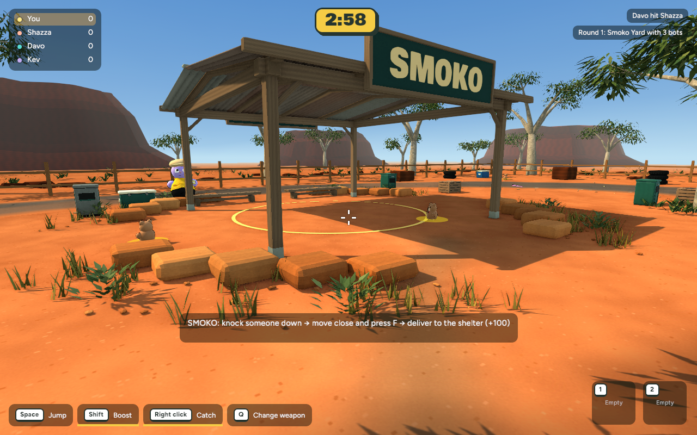
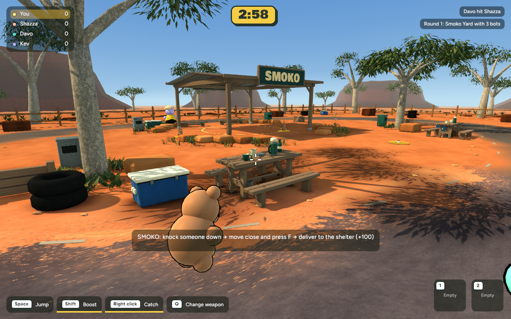
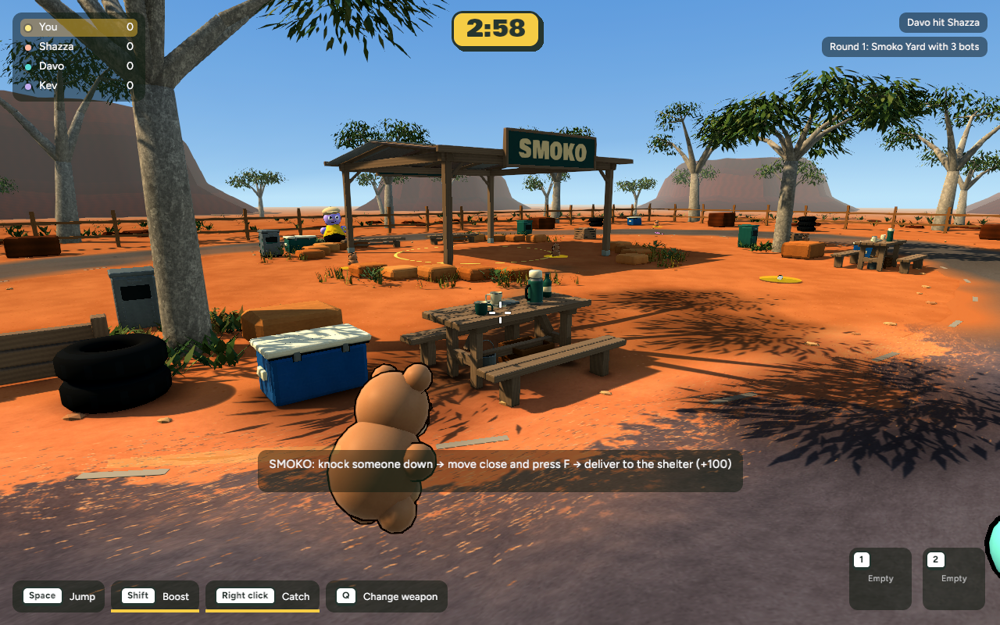

Same cameras and assets, with stronger warm sunlight, cooler fill and richer colour separation in the playable arena.



Actual solo Chrome WebGPU gameplay using the revised light, at balanced browser quality.
Compare with the Bush Servo concept · Recovery and verification